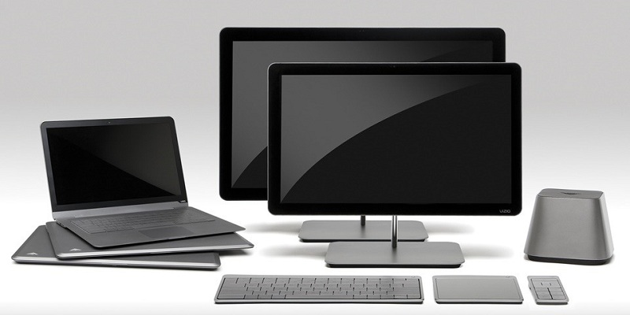
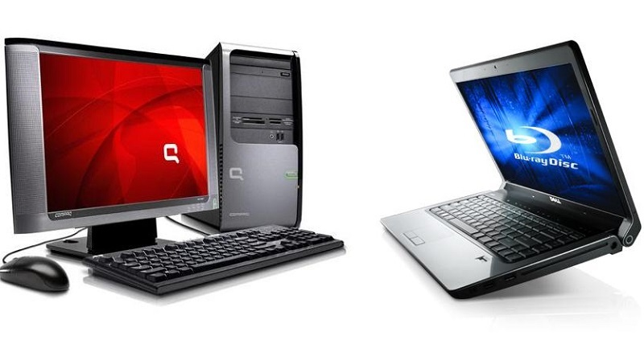
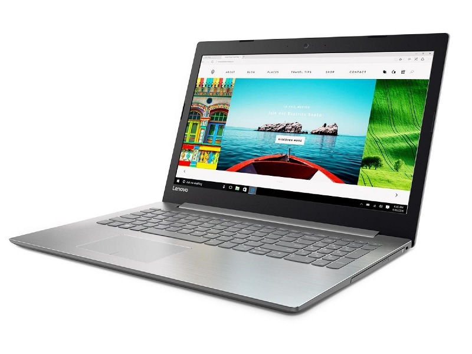
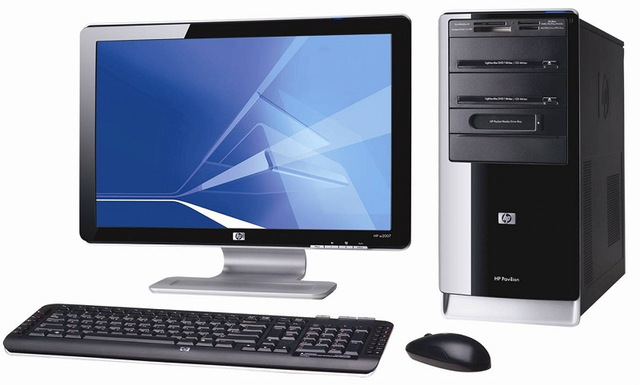

So sánh nên mua laptop hay PC để bàn dùng cái nào tốt nhất
Trong cuộc sống hiện đại ngày nay, việc sử dụng laptop hay máy tính bàn đã không còn
xa lạ gì với mỗi chúng ta. Những thiết bị này được xem là trợ thủ đắc lực để phục vụ cho mọi người
trong các hoạt động làm việc, học tập và giải trí… Nhưng nên mua máy tính bàn hay laptop thì tốt
hơn, loại nào tối ưu và tiết kiệm chi phí hơn?
Để trả lời cho câu hỏi nên mua laptop hay pc thì bạn đừng bỏ qua những thông tin so sánh máy tính để
bàn và laptop được nhắc đến dưới đây nhé. Máy Tính Việt sẽ cùng bạn tìm hiểu chi tiết về từng dòng
máy pc vs laptop, mời bạn cùng theo dõi.
Các tiêu chí đánh giá nên mua máy tính để bàn hay laptop
Để trả lời cho câu hỏi nên mua laptop hay máy tính bàn thì bạn hãy cùng theo dõi một số những tiêu
chí đánh giá dưới đây:
- Đánh giá trọng lượng, kích thước:
Về trọng lượng thì đương
nhiên laptop có nhiều ưu điểm hơn hẳn so với máy tính để bàn. Các mẫu laptop thường có thiết kế mỏng
nhẹ, gọn gàng, có thể dễ dàng mang theo khi di chuyển. Nếu bạn thường xuyên cần đem theo thiết bị
bên mình cho công việc, các cuộc họp thì laptop chính là lựa chọn hoàn hảo.
Những chiếc máy
tính bàn thì lại có kích thước cồng kềnh và trọng lượng lớn hơn. Tuy hiện nay các thiết bị đã được
tối ưu về thiết kế, ngày càng gọn nhẹ hơn nhưng nó vẫn chỉ phù hợp với những công việc cố
định.
- Tính di động và thoải mái:
Tiêu chí tiếp theo để đánh giá xem nên mua pc hay
laptop chính là dựa trên tính cơ động.

Đối với laptop: người dùng có thể mang theo chúng thoải mái vì thiết kế nhỏ gọn, thời trang. Dù là
những mẫu laptop màn hình lớn như 17.3 inch thì vẫn có thể di chuyển thoải mái.
Đối với máy
tính để bàn: Việc kết nối giữa nguồn, màn hình, linh kiện… với nhau khiến chúng hạn chế về tính di
động. Nhưng bù lại lại lại có bàn phím lớn, màn hình rộng, trải nghiệm thoải mái hơn.
- Giá
thành và độ bền:
So sánh laptop và máy tính để bàn về giá bán cũng giúp bạn có thêm căn cứ để
lựa chọn.
Laptop: Hiện nay các sản phẩm laptop có giá thành đã hợp lý hơn nhiều. Tùy theo cấu
hình, thương hiệu mà mức giá bán của laptop sẽ có sự khác nhau. Nhưng theo thiết kế ban đầu thì
laptop chỉ phù hợp cho những cấu hình nhất định, độ bền cũng không cao bằng PC.
Máy tính để
bàn: Bộ máy tính để bàn được đánh giá về độ bền bỉ cao hơn hẳn. Bên cạnh đó giá thành cũng khá phải
chăng, phù hợp với túi tiền của người dùng.

- Kết nối mạng:
Laptop: Kết nối mạng nhanh chóng qua wifi.
Máy tính để bàn: Sử dụng
mạng dây là chính.
- Giải trí:
Lướt web, mạng xã hội: Máy tính laptop có vẻ tiện lợi
hơn, nhưng trải nghiệm trên một màn hình cỡ lớn như máy tính bàn lại khiến bạn thoải mái
hơn.
Đối với phim ảnh: Máy tính bàn sẽ là lựa chọn hoàn hảo hơn vì mang đến trải nghiệm hình
ảnh ấn tượng hơn nhiều.
Chơi game: Nên mua laptop hay pc để chơi game? Thì cả laptop và máy
tính để bàn đều đáp ứng nhu cầu này, còn tùy theo sở thích hay tựa game bạn muốn giải trí để chọn
loại máy phù hợp.
Vậy việc nên mua laptop hay máy tính để bàn sẽ tùy thuộc theo nhu cầu, mục
đích công việc, sở thích của từng người dùng. Bạn hãy cân nhắc kỹ lưỡng để đưa ra lựa chọn mua hàng
phù hợp.
Đánh giá những ưu điểm chính của laptop và pc
Sau đây chúng tôi tổng hợp lại những ưu điểm – hạn chế của laptop và pc để bạn sớm quyết định nên
mua máy bàn hay laptop:

- Sản phẩm laptop:
+ Ưu điểm của laptop:
Laptop sở hữu thiết kế nhỏ gọn, linh động cao
trong việc di chuyển.
Cấu hình khủng, xử lý tác vụ nhanh, đồ họa đẹp mắt, chạy được cùng một
lúc nhiều ứng dụng.
Pin hoạt động được một thời gian nhất định mà không cần nguồn điện trực
tiếp.
Kiểu dáng mẫu mã phong phú, phù hợp với mọi đối tượng.
Có thể nâng cấp ram, gắn
ổ cứng và thay card màn hình.
Thích hợp với những người dùng làm việc và học tập cần di
chuyển nhiều.
+ Nhược điểm của laptop: Nếu không may rơi vỡ sẽ hư hỏng nghiệm trọng, việc sửa
chữa có phần khó khăn. Thời lượng pin cũng giảm sau thời gian dài sử dụng.
- Sản phẩm máy
tính để bàn:
+ Ưu điểm:
Cấu hình cao, mạnh mẽ, khả năng hoạt động ổn định
hơn.
CPU tốc độ cao, phần cứng có khả năng xử lý độ họa tốt. Bên cạnh đó là dung lượng lưu
trữ khủng.
Màn hình rộng, bàn phím và chuột rời nên thao tác thoải mái, dễ dàng.
Tuổi
thọ các linh kiện cao. Các linh kiện khó hư hỏng.
Dễ dàng tháo lắp để nâng cấp hay sửa chữa
nếu hư hỏng.

+ Nhược điểm của máy tính để bàn: Thiết bị này khó di chuyển, tốn điện năng, và khi mất điện thì
không thể sử dụng được.
Đánh giá sinh viên nên mua laptop hay pc tốt nhất
Để lựa chọn mua mộ chiếc máy tính phù hợp là điều tương đối khó khăn. Bên cạnh những tư vấn mà cửa
hàng máy tính Nguyễn Chiến Computer đưa ra thì bạn cũng nên xem xét trên nhu cầu sử dụng và mức chi
phí của
bản thân để chọn cho chính xác.
Nếu cần thường xuyên di chuyển thì nên ưu tiên các sản phẩm
laptop xách tay. Hiện nay trên thị trường có rất nhiều mẫu mã laptop khác nhau cho bạn thoải mái lựa
chọn. Theo mục đích công việc để bạn lựa chọn thiết bị ưng ý cho mình.
Nếu bạn không có nhu
cầu mang thiết bị di chuyển lại muốn tiết kiệm chi phí ban đầu thì máy tính bàn là lựa chọn tối ưu
hơn. Máy bán hoạt động bền bỉ, ổn định, không gian thoải mái sẽ khiến bạn hài lòng.
Nếu cần
tư vấn thêm các thông tin nào khác hãy liên hệ với Nguyễn Chiến Computer chúng tôi nhé.
Nguồn: Maytinhviet.vn
Tin liên quan